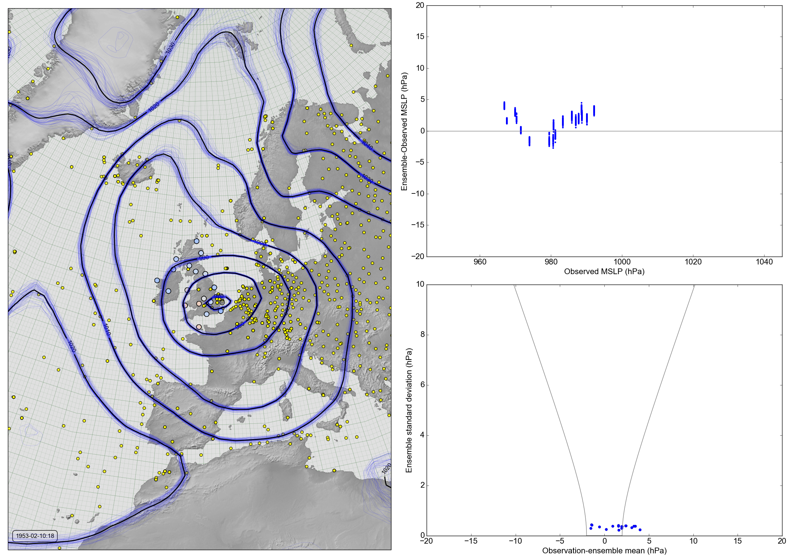

Validating 20CR2c against DWR data: February 1953 station error plot¶
See also

{kind=link}
On the left: MSLP Contours for 20CR v2c, observations assimilated (yellow circles), DWR observations not assimilated (larger circles, coloured by deviation from reanalysis: blue - observation lower, red - observation higher.
Top right: Scatter plot of ensemble-observation against observation at each DWR station.
Bottom right: Scatter plot of ensemble standard deviation against ensemble-mean - observation.
Collect the reanalysis data:
import Meteorographica.data.twcr as twcr
twcr.fetch('prmsl',1953,version='2c')
twcr.fetch_observations(1953,version='2c')
Script to make the figure:
# UK region weather plot
# 20CR2c pressures and validation against DWR
import math
import datetime
import numpy
import collections
import iris
import iris.analysis
import matplotlib
from matplotlib.backends.backend_agg import \
FigureCanvasAgg as FigureCanvas
from matplotlib.figure import Figure
from matplotlib.patches import Circle
import cartopy
import cartopy.crs as ccrs
import Meteorographica.weathermap as wm
import Meteorographica.data.twcr as twcr
import DWR
import local_plots
# Date to show
year=1953
month=2
day=10
hour=18
dte=datetime.datetime(year,month,day,hour)
# Landscape page
fig=Figure(figsize=(22,22/math.sqrt(2)), # Width, Height (inches)
dpi=100,
facecolor=(0.88,0.88,0.88,1),
edgecolor=None,
linewidth=0.0,
frameon=False,
subplotpars=None,
tight_layout=None)
canvas=FigureCanvas(fig)
font = {'family' : 'sans-serif',
'sans-serif' : 'Arial',
'weight' : 'normal',
'size' : 16}
matplotlib.rc('font', **font)
# Get the DWR observations within +- 15 hours
obs=DWR.load_observations('prmsl',
dte-datetime.timedelta(hours=15),
dte+datetime.timedelta(hours=15))
# Remove stations already in ISPD
obs=obs[~obs['name'].isin(['LERWICK','STORNOWAY','VALENTIA',
'CULDROSE','GORLESTON','LEUCHARS'])]
# Get the observations from 20CR
obs_t=twcr.load_observations_fortime(dte,version='2c')
# Filter to those near the UK
obs_s=obs_t.loc[((obs_t['Latitude']>0) &
(obs_t['Latitude']<90)) &
((obs_t['Longitude']>240) |
(obs_t['Longitude']<100))].copy()
# load the pressures
prmsl=twcr.load('prmsl',year,month,day,hour,
version='2c')
prmsl.data=prmsl.data/100.0 # To hPa
# Contour plot on the left
projection=ccrs.RotatedPole(pole_longitude=177.5, pole_latitude=35.5)
ax_map=fig.add_axes([0.01,0.01,0.485,0.98],projection=projection)
scale=20
extent=[scale*-1,scale,scale*-1*math.sqrt(2),scale*math.sqrt(2)]
local_plots.plot_contour(ax_map,extent,dte,prmsl,obs_t,obs,
projection=projection)
# Label with the date
wm.plot_label(ax_map,
'%04d-%02d-%02d:%02d' % (year,month,day,hour),
facecolor=fig.get_facecolor(),
x_fraction=0.02,
horizontalalignment='left')
# obs_v_reanalysis scatter plot top right
ax_ovr=fig.add_axes([0.54,0.54,0.45,0.45])
local_plots.plot_rotated_scatter(ax_ovr,prmsl,obs,dte)
# deviation_v_spread scatter plot bottom right
ax_dvs=fig.add_axes([0.54,0.04,0.45,0.45])
local_plots.plot_deviation_spread(ax_dvs,prmsl,obs,dte)
# Output as png
fig.savefig('reliability+error_%04d%02d%02d%02d.png' %
(year,month,day,hour))